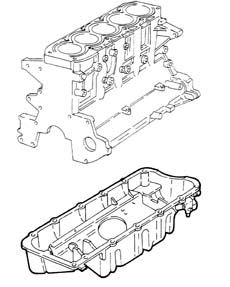

DESCRIPTION OF COMPONENTS
- Path
- Descriptions > 10 ENGINE > 1020 CRANKCASE SUMP AND COVERS > 1020A CRANKCASE OIL SUMP > DESCRIPTION OF COMPONENTS
- Kind
- system description
- Applies to
- engines: 2.4 JTD 10V; all production periods
- Interactive page
- https://sloeber94.github.io/elrnDB-lThss/en/#/609302
Applies to: engines: 2.4 JTD 10V; all production periods
CRANKCASE SUMP
Specifications
Function
This is a structural part of the engine that performs a mechanical role as well as containing the engine oil because it is directly connected to the intermediate shaft mount.
Type
The oil sump is in aluminium alloy and contains special partitions that prevent the engine oil slopping around too much when the pump could end up drawing in air.
A reinforcement plate fitted in the lower part of the sump near the splines for housing the front exhaust pipe section contains the exhaust pipe in the case of violent impact.
